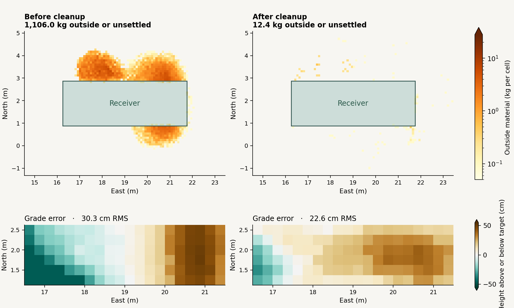

Research preview ·
Moving earth with AMMI
Each scoop changes the ground that the next machine has to work on. AMMI studies how a planner can coordinate machine skills around those changes, from choosing where to dig to measuring the surface left behind.
From site goals to bucket motion
A mission identifies where to remove material and where it should end up. The planner can inspect the site, list available skills, ask a particular machine to run one, or stop. Each skill accepts a target and reports a measured outcome. If a bucket encounters a buried pipe or leaves a spill, the next decision can use the changed site state.

Learning a skill. An excavator policy learns with proximal policy optimization (PPO). It observes joint motion and local terrain and practices cutting, curling and lifting a retained load. A fast analytical soil model supports repeated trials. Particle simulation provides a second test of contact, retention and transfer.
Calling a skill. In a separate three-machine experiment, a language model called eight predefined skills, including learned truck positioning, skid-steer approach and bucket posture. The four-machine quarry film below used a local dispatcher, feedback controllers and supervised recoveries.
Watch the work
The excavator digs through layered soil next to a buried pipe. A truck carries the load to a receiving pit, a wheel loader adds material, and two machines shape the fill. Isaac Lab and Newton simulate the articulated machines and the soil together. The material point method (MPM) tracks moving soil and transmits contact forces back to the machines.
Dig and load
The bucket curls through the second cut, lifts and tips soil and rock into the waiting truck.
Open digging clip · 8 sFill from the stockpile
On the second pickup, the loader eases back under resistance, curls a 1.54-tonne load and reverses out. A fixed camera shows the whole maneuver in real time.
Open second pickup · 27 sGrade the interior
The excavator uses the side of its bucket to move soil from high spots toward low spots. The longer of these two sweeps spans 4.22 m.
Open grading clip · 10 sRecover the spill
The skid steer lowers its cutting edge, pushes a strip of spilled soil into the opening and backs away for another pass.
Open cleanup clip · 6 sThe opening film follows the work in chronological order. Both loader pickups play in real time. The renderer uses the recorded 15 Hz machine and soil states and interpolates the positions and joint motion between samples for 30 fps playback. Other operations are condensed. The sequence includes a staged restart after the truck tips, with matched geometry and reinitialized soil stress and contact history.
The machines
- Tracked excavator
- Cuts and curls a load, swings to the truck, and grades with the side of the bucket.
- Dump truck
- Hauls between work areas, positions at the receiver and raises the bed to discharge.
- Articulated wheel loader
- Steers at the chassis joint and carries large stockpile loads into the fill area.
- Skid steer
- Works the narrow approach with short, ground-following pushes and repeated passes.
- Grab crane · separate port scene
- Closes a clamshell grab in a ship’s hold, hoists and swings the load, then opens above a shore hopper.
Where did the soil end up?
Delivery and finish quality are different measurements. Tracking the same 49,206 delivered grains let us weigh what settled inside the pit. A separate survey compared the surface against the target elevation in 120 quarter-metre grid cells.
- 99.77%
- of the tracked 5.293 t settled inside
- 12.38 kg
- of the tracked delivery remained outside
- 22.6 cm
- final root-mean-square height error


No code is being released. Updates will follow soon.